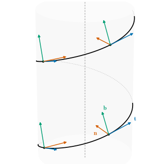
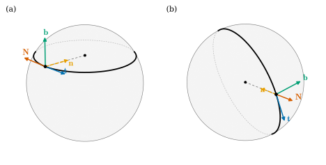

5.3 The Frenet–Serret Formulas
Goals
- Frenet–Serret formulas \(\mathbf{t}' = \kappa\mathbf{n}\), \(\mathbf{n}' = -\kappa\mathbf{t} + \tau\mathbf{b}\), \(\mathbf{b}' = -\tau\mathbf{n}\)을 유도하고, coefficient matrix가 antisymmetric인 이유를 설명할 수 있다.
- Frenet frame이 Darboux vector \(\boldsymbol{\omega} = \tau\mathbf{t} + \kappa\mathbf{b}\)를 각속도로 하여 회전함을 보일 수 있다.
- 일반 매개변수의 공식 \(\kappa = \abs{\gamma' \times \gamma''}/\abs{\gamma'}^3\), \(\tau = \inner{\gamma' \times \gamma''}{\gamma'''}/\abs{\gamma' \times \gamma''}^2\)을 유도하고 helix와 twisted cubic에서 계산할 수 있다.
- sphere 위의 circle of latitude와 great circle의 Frenet frame을 구하고, principal normal \(\mathbf{n}\)과 sphere의 normal vector \(\mathbf{N}\)의 관계를 설명할 수 있다.
Prerequisites
- Definition 5.1.8 (principal normal vector), Proposition 5.1.2 (curvature for a general parameter and reparametrization invariance), Exercise 5.1.3 (curvature of a curve on a sphere)
- Definition 5.2.1 (binormal vector), Proposition 5.2.2 (Frenet frame), Definition 5.2.5 (torsion), Proposition 5.2.7 (torsion formula for a unit-speed curve)
- cross product의 성질과 positively oriented orthonormal basis의 cross product(Theorem 1.6.16, Proposition 1.6.17)
- sphere의 circle of latitude와 great circle(Example 4.1.13, Example 4.5.11, Example 4.5.12)
Motivation
Section 5.2까지 Frenet frame의 세 벡터 가운데 두 벡터의 도함수를 구했다. \(\mathbf{t}' = \kappa\mathbf{n}\)이 curvature를, \(\mathbf{b}' = -\tau\mathbf{n}\)이 torsion을 정의했다. 남은 것은 \(\mathbf{n}'\)이다. 이것도 Frenet frame으로 전개하면, frame의 세 벡터가 곡선을 따라 어떻게 변하는지가 \(\kappa\)와 \(\tau\) 두 함수만으로 완전히 기록된다. 이 절은 그 공식을 유도하고, 기하적인 뜻(frame의 회전)과 계산에 쓰는 공식(일반 매개변수)을 얻는다.

The Frenet–Serret Formulas
Theorem 5.3.1 (Frenet–Serret formulas). \(\gamma\colon I \to \R^3\)이 arc length로 parametrization되어 있고 \(I\)에서 \(\kappa \gt 0\)이라 하자. 그러면
이다. 세 벡터를 열로 늘어놓은 \(3 \times 3\) 행렬 \(F = (\mathbf{t}\ \mathbf{n}\ \mathbf{b})\)로 쓰면
이고, \(K\)는 antisymmetric이다(\(K^{\mathsf{T}} = -K\)).
이 정리가 말하는 것. frame의 변화율을 다시 그 frame으로 쓰면 coefficient는 \(\kappa\)와 \(\tau\)뿐이다. 곡선의 모든 국소적인 정보가 이 두 함수에 들어 있다는 것의 첫 증거다. 이것을 거꾸로 푸는 것이 Section 5.4의 곡선론의 기본정리다.
Proof idea: 첫째와 셋째 식은 \(\kappa\)와 \(\tau\)의 정의다. 둘째 식은 \(\mathbf{n} = \mathbf{b} \times \mathbf{t}\)를 곱의 미분법으로 미분해 얻는다.
Proof. 첫째 식은 (5.1.4), 셋째 식은 정의 (5.2.3)이다. Proposition 5.2.2에서 \(\mathbf{n} = \mathbf{b} \times \mathbf{t}\)이므로 cross product의 곱의 미분법 (Section 1.6)과 앞의 두 식에서
\[ \mathbf{n}' = \mathbf{b}' \times \mathbf{t} + \mathbf{b} \times \mathbf{t}' = -\tau\,\mathbf{n} \times \mathbf{t} + \kappa\,\mathbf{b} \times \mathbf{n} \]이다. Proposition 5.2.2와 antisymmetry(Theorem 1.6.16(a))에서 \(\mathbf{n} \times \mathbf{t} = -\mathbf{t} \times \mathbf{n} = -\mathbf{b}\), \(\mathbf{b} \times \mathbf{n} = -\mathbf{n} \times \mathbf{b} = -\mathbf{t}\)이므로 \(\mathbf{n}' = \tau\mathbf{b} - \kappa\mathbf{t}\)이다.
행렬 꼴: \(FK\)의 \(j\)번째 열은 \(F\)의 열들을 \(K\)의 \(j\)번째 열의 성분으로 결합한 것이다. 첫째 열은 \(0\cdot\mathbf{t} + \kappa\mathbf{n} + 0\cdot\mathbf{b} = \mathbf{t}'\), 둘째 열은 \(-\kappa\mathbf{t} + 0\cdot\mathbf{n} + \tau\mathbf{b} = \mathbf{n}'\), 셋째 열은 \(0\cdot\mathbf{t} - \tau\mathbf{n} + 0\cdot\mathbf{b} = \mathbf{b}'\)이다. \(K\)의 antisymmetry는 직접 보면 된다.
antisymmetry는 우연이 아니다. \(e_1, e_2, e_3\)이 매끄럽게 움직이는 orthonormal basis이고 \(e_j' = \sum_i K_{ij}e_i\)라 하면, \(\inner{e_i}{e_j}\)가 상수이므로 \(0 = \inner{e_i}{e_j}' = \inner{e_i'}{e_j} + \inner{e_i}{e_j'} = K_{ji} + K_{ij}\)이다(Proposition 1.5.9). 곧 움직이는 orthonormal basis의 변화율 행렬은 언제나 antisymmetric이다. Frenet frame에서 새로 알려 주는 것은 \(K_{31} = \inner{\mathbf{t}'}{\mathbf{b}} = 0\), 곧 \(\mathbf{t}'\)에 \(\mathbf{b}\) 성분이 없다는 것뿐이다. 그것은 \(\mathbf{n}\)을 \(\mathbf{t}'\)의 방향으로 골랐기 때문이다. 이 관찰은 Section 5.4의 존재 증명에서 다시 쓴다.
antisymmetric 행렬로 하는 미분은 “돌기만 하는” 운동이다. 이것을 cross product로 쓰면 회전의 축과 빠르기가 드러난다.
Corollary 5.3.2 (rotation of the Frenet frame). Theorem 5.3.1의 상황에서
로 두면 \(\mathbf{t}' = \boldsymbol{\omega} \times \mathbf{t}\), \(\mathbf{n}' = \boldsymbol{\omega} \times \mathbf{n}\), \(\mathbf{b}' = \boldsymbol{\omega} \times \mathbf{b}\)이다. \(\boldsymbol{\omega}\)를 \(\gamma\)의 Darboux vector(다르부 벡터)라 한다.
Proof. Proposition 5.2.2의 세 등식과 \(\mathbf{v} \times \mathbf{v} = 0\)에서 \(\boldsymbol{\omega} \times \mathbf{t} = \kappa\,\mathbf{b} \times \mathbf{t} = \kappa\mathbf{n}\), \(\boldsymbol{\omega} \times \mathbf{n} = \tau\,\mathbf{t} \times \mathbf{n} + \kappa\,\mathbf{b} \times \mathbf{n} = \tau\mathbf{b} - \kappa\mathbf{t}\), \(\boldsymbol{\omega} \times \mathbf{b} = \tau\,\mathbf{t} \times \mathbf{b} = -\tau\mathbf{n}\)이다. (5.3.1)과 비교하면 된다.
강체가 축 \(\mathbf{u}\)(단위벡터) 둘레를 각속도 \(\lambda\)로 돌 때 그 위의 벡터 \(\mathbf{v}\)의 속도는 \(\lambda\,\mathbf{u} \times \mathbf{v}\)이다. 그러니 따름정리는 “Frenet frame은 매 순간 \(\boldsymbol{\omega}\)를 축으로, 단위 길이당 \(\abs{\boldsymbol{\omega}} = \sqrt{\kappa^2 + \tau^2}\) 라디안의 빠르기로 돈다”는 뜻이다. \(\tau = 0\)이면 \(\boldsymbol{\omega} = \kappa\mathbf{b}\)이므로 frame은 osculating plane 안에서만 돌고(plane curve), \(\kappa\)가 작고 \(\tau\)가 크면 frame은 주로 접선 둘레로 비틀린다.
Example 5.3.3 (Frenet frame of the helix, running example). helix의 arc length parametrization (4.3.2)에서 \(c = \sqrt{a^2 + b^2}\)이고, Example 5.1.10, Example 5.2.3에서
\[ \begin{aligned} \mathbf{t} &= \big(-\tfrac ac\sin\tfrac sc,\ \tfrac ac\cos\tfrac sc,\ \tfrac bc\big), \qquad \mathbf{n} = -\big(\cos\tfrac sc,\ \sin\tfrac sc,\ 0\big),\\ \mathbf{b} &= \big(\tfrac bc\sin\tfrac sc,\ -\tfrac bc\cos\tfrac sc,\ \tfrac ac\big), \qquad \kappa = \frac{a}{c^2}, \qquad \tau = \frac{b}{c^2} \end{aligned} \]이다. 둘째 공식을 직접 확인하자. \(\mathbf{n}' = \tfrac1c(\sin\tfrac sc, -\cos\tfrac sc, 0)\)이고, 우변은
\[ \begin{aligned} -\frac{a}{c^2}\mathbf{t} + \frac{b}{c^2}\mathbf{b} &= \Big(\frac{a^2 + b^2}{c^3}\sin\frac sc,\ -\frac{a^2 + b^2}{c^3}\cos\frac sc,\ -\frac{ab}{c^3} + \frac{ab}{c^3}\Big)\\ &= \frac1c\Big(\sin\frac sc,\ -\cos\frac sc,\ 0\Big) \end{aligned} \]로 같다. Darboux vector는 \(\boldsymbol{\omega} = \tfrac{b}{c^2}\mathbf{t} + \tfrac{a}{c^2}\mathbf{b}\)이고, 성분을 더하면 \(\sin\)과 \(\cos\) 항이 상쇄되어
\[ \boldsymbol{\omega} = \Big(0,\ 0,\ \frac{b^2 + a^2}{c^3}\Big) = \Big(0,\ 0,\ \frac1c\Big) \]로 상수다. helix의 Frenet frame은 \(z\)축 둘레를 단위 길이당 \(1/c\) 라디안씩 돈다. helix 한 바퀴의 길이가 \(2\pi c\)이므로 한 바퀴에 frame도 정확히 한 바퀴 돈다(Figure 5.3.1).
Verification: verify/v-5-3-frenet.py
Formulas for a General Parameter
일반 매개변수의 곡선에서 \(\kappa\), \(\tau\)와 Frenet frame은 orientation-preserving arc length parametrization으로 정했다(Definition 5.1.1, Definition 5.2.5). arc length parametrization을 식으로 구하기 어려운 곡선이 많으므로, 원래 매개변수로 바로 계산하는 공식을 만든다. 속력을 \(v(t) = \abs{\gamma'(t)}\)로 쓴다.
Proposition 5.3.4 (curvature, torsion, and Frenet frame for a general parameter). \(\gamma\colon I \to \R^3\)이 regular curve라 하자.
- (a) \(\kappa(t) = \abs{\gamma'(t) \times \gamma''(t)}/\abs{\gamma'(t)}^3\)이다. 특히 \(\kappa(t) \gt 0\)일 필요충분조건은 \(\gamma'(t) \times \gamma''(t) \neq 0\)이다.
- (b) \(\kappa(t) \gt 0\)이면
\[ \begin{aligned} &\mathbf{t} = \frac{\gamma'}{\abs{\gamma'}}, \qquad \mathbf{b} = \frac{\gamma' \times \gamma''}{\abs{\gamma' \times \gamma''}}, \qquad \mathbf{n} = \mathbf{b} \times \mathbf{t},\\ &\tau = \frac{\inner{\gamma' \times \gamma''}{\gamma'''}}{\abs{\gamma' \times \gamma''}^2} \end{aligned} \tag{5.3.4} \]
- (c) \(I\)에서 \(\kappa \gt 0\)이면 \(t\)에 대한 도함수는 다음과 같다.
\[ \frac{d\mathbf{t}}{dt} = v\kappa\,\mathbf{n}, \qquad \frac{d\mathbf{n}}{dt} = v(-\kappa\,\mathbf{t} + \tau\,\mathbf{b}), \qquad \frac{d\mathbf{b}}{dt} = -v\tau\,\mathbf{n} \tag{5.3.5} \]
Proof idea: \(\gamma' = v\mathbf{t}\)를 미분하고 (c)를 쓰면 \(\gamma''\)과 \(\gamma'''\)을 Frenet frame으로 전개할 수 있다. cross product \(\gamma' \times \gamma''\)에서는 \(\mathbf{t}\) 방향 항이 사라져 \(v^3\kappa\,\mathbf{b}\)만 남는다.
Proof. (c)부터 보인다. \(\beta\)를 orientation-preserving arc length parametrization이라 하면 정의에서 \(\mathbf{t}(t) = \mathbf{t}^\beta(s(t))\)이고 \(\mathbf{n}\), \(\mathbf{b}\), \(\kappa\), \(\tau\)도 같다. chain rule과 \(s'(t) = v(t)\)((4.2.5))에서 \(d\mathbf{t}/dt = v\,(\mathbf{t}^\beta)'(s(t))\)이고, \(\beta\)에 (5.3.1)을 쓰면 (c)의 세 식이 나온다.
이제 \(\kappa(t) \gt 0\)인 점 근처에서 계산한다. \(\gamma' = v\mathbf{t}\)를 미분하면 (c)에서
\[ \gamma'' = v'\,\mathbf{t} + v^2\kappa\,\mathbf{n}, \qquad \gamma''' = (v'' - v^3\kappa^2)\,\mathbf{t} + (3vv'\kappa + v^2\kappa')\,\mathbf{n} + v^3\kappa\tau\,\mathbf{b} \]이다(둘째 식은 첫째 식을 한 번 더 미분하고 \(d\mathbf{t}/dt\), \(d\mathbf{n}/dt\)에 (c)를 넣어 정리한 것이다. \(\kappa'\)은 \(t\)에 대한 도함수다). \(\mathbf{t} \times \mathbf{t} = 0\), \(\mathbf{t} \times \mathbf{n} = \mathbf{b}\)에서
\[ \gamma' \times \gamma'' = v\,\mathbf{t} \times (v'\,\mathbf{t} + v^2\kappa\,\mathbf{n}) = v^3\kappa\,\mathbf{b}, \qquad \inner{\gamma' \times \gamma''}{\gamma'''} = v^3\kappa \cdot v^3\kappa\tau = v^6\kappa^2\tau \]이다(\((\mathbf{t}, \mathbf{n}, \mathbf{b})\)가 orthonormal이므로 \(\gamma'''\)과 \(\mathbf{b}\)의 inner product는 \(\mathbf{b}\) 성분이다). 첫 식의 크기를 재면 \(\abs{\gamma' \times \gamma''} = v^3\kappa\)이므로 (a)의 공식이 나오고, \(\mathbf{b} = \gamma' \times \gamma''/\abs{\gamma' \times \gamma''}\)이다. 둘째 식을 \(\abs{\gamma' \times \gamma''}^2 = v^6\kappa^2\)으로 나누면 \(\tau\)의 공식이다. \(\mathbf{n} = \mathbf{b} \times \mathbf{t}\)는 Proposition 5.2.2이다.
남은 것은 \(\kappa(t) = 0\)인 점에서 (a)의 공식이다. \(\mathbf{n}\)을 쓰지 않고 계산하면 된다. \(\gamma'' = v'\mathbf{t} + v\,d\mathbf{t}/dt\)이므로 \(\gamma' \times \gamma'' = v^2\,\mathbf{t} \times (d\mathbf{t}/dt)\)이고, \(d\mathbf{t}/dt \perp \mathbf{t}\)(Corollary 4.1.12)이므로 Theorem 1.6.16(d)에서 \(\abs{\gamma' \times \gamma''} = v^2\abs{d\mathbf{t}/dt} = v^3\kappa\)이다 (마지막 등호는 (5.1.2)). 이 계산은 모든 점에서 성립하므로 (a)가 증명되었고, \(v \gt 0\)이므로 \(\kappa \gt 0 \iff \gamma' \times \gamma'' \neq 0\)이다.
(a)의 공식은 curvature가 “\(\gamma'\)과 \(\gamma''\)이 만드는 평행사변형의 넓이를 속력의 세제곱으로 나눈 것”임을 말한다. \(\gamma''\)의 \(\mathbf{t}\) 방향 성분(속력이 변하는 몫)은 넓이에 기여하지 않는다. plane curve \((x, y, 0)\)이면 \(\gamma' \times \gamma'' = (0, 0, x'y'' - x''y')\)이므로 (a)는 (4.4.4)의 절댓값이다(Proposition 5.1.5와 일치). (5.3.4)의 \(\tau\)는 arc length parametrization에서 (5.2.4)가 된다(\(v = 1\)이면 \(\abs{\gamma' \times \gamma''} = \kappa\)).
Example 5.3.5 (the helix via the general formulas, running example). \(\gamma(t) = (a\cos t, a\sin t, bt)\)이면 \(\gamma' = (-a\sin t, a\cos t, b)\), \(\gamma'' = (-a\cos t, -a\sin t, 0)\), \(\gamma''' = (a\sin t, -a\cos t, 0)\)이다. cross product의 성분 공식에서
\[ \begin{aligned} \gamma' \times \gamma'' &= \big(a\cos t\cdot 0 - b\cdot(-a\sin t),\ \ b\cdot(-a\cos t) - (-a\sin t)\cdot 0,\ \ a^2\sin^2 t + a^2\cos^2 t\big)\\ &= (ab\sin t,\ -ab\cos t,\ a^2) \end{aligned} \]이므로 \(\abs{\gamma' \times \gamma''}^2 = a^2b^2 + a^4 = a^2(a^2 + b^2)\), \(\abs{\gamma'}^3 = (a^2 + b^2)^{3/2}\)이고 \(\inner{\gamma' \times \gamma''}{\gamma'''} = a^2b\sin^2 t + a^2b\cos^2 t = a^2b\)이다. 따라서
\[ \kappa = \frac{a\sqrt{a^2 + b^2}}{(a^2 + b^2)^{3/2}} = \frac{a}{a^2 + b^2}, \qquad \tau = \frac{a^2b}{a^2(a^2 + b^2)} = \frac{b}{a^2 + b^2} \]이다. Example 5.1.7, Example 5.2.6에서 arc length parametrization으로 구한 값과 같다. 두 방법이 같은 답을 주는 것은 공식이 맞다는 확인이기도 하다.
Verification: verify/v-5-3-frenet.py
Example 5.3.6 (twisted cubic). \(\gamma(t) = (t, t^2, t^3)\)을 twisted cubic(꼬인 삼차곡선)이라 한다. \(\gamma' = (1, 2t, 3t^2)\), \(\gamma'' = (0, 2, 6t)\), \(\gamma''' = (0, 0, 6)\)이고
\[ \gamma' \times \gamma'' = \big(2t\cdot 6t - 3t^2\cdot 2,\ \ 3t^2\cdot 0 - 1\cdot 6t,\ \ 1\cdot 2 - 2t\cdot 0\big) = (6t^2,\ -6t,\ 2) \]이다. \(\abs{\gamma' \times \gamma''}^2 = 36t^4 + 36t^2 + 4 = 4(9t^4 + 9t^2 + 1) \gt 0\)이므로 모든 점에서 \(\kappa \gt 0\)이고, \(\inner{\gamma' \times \gamma''}{\gamma'''} = 12\)이다. 따라서
\[ \kappa(t) = \frac{2\sqrt{9t^4 + 9t^2 + 1}}{(1 + 4t^2 + 9t^4)^{3/2}}, \qquad \tau(t) = \frac{12}{4(9t^4 + 9t^2 + 1)} = \frac{3}{9t^4 + 9t^2 + 1} \]이다. torsion은 어디서나 양수이고 \(t = 0\)에서 최대 \(3\)이다. \(t = 0\)에서 \(\kappa = 2\)이고, Frenet frame은 \(\mathbf{t} = e_1\), \(\mathbf{b} = (0, 0, 2)/2 = e_3\), \(\mathbf{n} = e_3 \times e_1 = e_2\), 곧 standard basis다. 원점에서 twisted cubic은 “자기 Frenet frame에 대해 좌표를 잡은” 곡선이다. Section 5.5에서 이것이 모든 곡선의 국소적인 모양의 모형임을 본다.
Verification: verify/v-5-3-frenet.py (dgsym.curvature_torsion과도 비교한다)
Frenet Frames of Circles on the Sphere
Example 4.5.12에서 circle of latitude의 curvature와 center of curvature를 구했고, curvature vector가 sphere에 수직이 아님을 보았다. 이제 Frenet frame 전체를 구하고 sphere의 바깥쪽 unit normal vector \(\mathbf{N} = \mathbf{x}/r\)(running example의 기준 방향)과 비교한다. sphere의 parametrization (4.1.8)을 쓴다.
Example 5.3.7 (Frenet frame of a circle on the sphere, running example). (a) circle of latitude. \(\gamma(\varphi) = \mathbf{x}(\theta_0, \varphi) = (r\sin\theta_0\cos\varphi,\ r\sin\theta_0\sin\varphi,\ r\cos\theta_0)\), \(0 \lt \theta_0 \lt \pi\)라 하자. \(\rho_0 = r\sin\theta_0 \gt 0\)으로 쓰면
\[ \gamma' = \rho_0(-\sin\varphi, \cos\varphi, 0), \qquad \gamma'' = -\rho_0(\cos\varphi, \sin\varphi, 0), \qquad \gamma''' = \rho_0(\sin\varphi, -\cos\varphi, 0) \]이고 \(\gamma' \times \gamma'' = \rho_0^2\big(0, 0, \sin^2\varphi + \cos^2\varphi\big) = (0, 0, \rho_0^2)\)이다. (5.3.4)에서
이다(\(\mathbf{n} = e_3 \times \mathbf{t}\), \(\gamma'''\)은 \(xy\)평면에 있으므로 \(\inner{\gamma' \times \gamma''}{\gamma'''} = 0\)). curvature는 Example 4.5.12의 값과 같고, \(\tau = 0\)은 Proposition 5.2.9와 맞는다. sphere의 normal vector는 \(\mathbf{N} = (\sin\theta_0\cos\varphi,\ \sin\theta_0\sin\varphi,\ \cos\theta_0)\)이므로
\[ \mathbf{N} = -\sin\theta_0\,\mathbf{n} + \cos\theta_0\,\mathbf{b}, \qquad \inner{\mathbf{t}}{\mathbf{N}} = 0 \]이다. 곧 \(\mathbf{N}\)은 \(\mathbf{n}\)과 \(\mathbf{b}\)가 만드는 평면(Section 5.5의 normal plane) 안에 있고, 적도가 아니면 \(\mathbf{n}\)과 평행하지 않다(Figure 5.3.2(a)). curvature vector \(\kappa\mathbf{n}\)을 \(\mathbf{N}\) 방향 성분과 나머지로 나누면, \(\mathbf{N}\) 방향 성분은 \(\kappa\inner{\mathbf{n}}{\mathbf{N}} = \dfrac{1}{r\sin\theta_0}(-\sin\theta_0) = -\dfrac1r\)이고 나머지의 크기는 \(\sqrt{\kappa^2 - 1/r^2} = \abs{\cot\theta_0}/r\)이다. Example 4.5.12에서 각으로 구한 값과 같다.
(b) great circle. meridian \(\sigma(\theta) = \mathbf{x}(\theta, \varphi_0)\)은 great circle의 일부다(Example 4.5.11). \(\sigma' = r(\cos\theta\cos\varphi_0, \cos\theta\sin\varphi_0, -\sin\theta)\), \(\sigma'' = -\sigma\)이므로 \(\kappa = 1/r\), \(\mathbf{n} = -\sigma/r = -\mathbf{N}\)이고, 같은 방식으로 계산하면 \(\mathbf{b} = (-\sin\varphi_0, \cos\varphi_0, 0)\)(great circle이 놓인 평면의 normal vector, 상수), \(\tau = 0\)이다. great circle에서는 principal normal이 sphere의 normal vector와 정확히 반대이고, curvature vector 전체가 \(\mathbf{N}\) 방향이다(Figure 5.3.2(b)).
(c) 공통점. \(\gamma\)가 \(S^2(r)\) 위의 어떤 unit-speed curve이든 \(\inner{\gamma''}{\gamma} = -1\)이므로(Exercise 5.1.3) \(\inner{\kappa\mathbf{n}}{\mathbf{N}} = \inner{\gamma''}{\gamma/r} = -1/r\)이다. curvature vector의 \(\mathbf{N}\) 방향 성분은 곡선에 무관하게 \(-1/r\)이다. 달라지는 것은 나머지 성분이고, 그것이 \(0\)인 것이 great circle이다.
Verification: verify/v-5-3-frenet.py

Summary
- \(\kappa \gt 0\)이면 \(\mathbf{t}' = \kappa\mathbf{n}\), \(\mathbf{n}' = -\kappa\mathbf{t} + \tau\mathbf{b}\), \(\mathbf{b}' = -\tau\mathbf{n}\)이다. coefficient matrix는 antisymmetric이다(Theorem 5.3.1).
- Frenet frame은 Darboux vector \(\boldsymbol{\omega} = \tau\mathbf{t} + \kappa\mathbf{b}\)를 축으로 단위 길이당 \(\sqrt{\kappa^2 + \tau^2}\) 라디안씩 돈다(Corollary 5.3.2). helix에서 \(\boldsymbol{\omega} = (0, 0, 1/c)\)이다.
- 일반 매개변수에서 \(\kappa = \abs{\gamma' \times \gamma''}/\abs{\gamma'}^3\), \(\tau = \inner{\gamma' \times \gamma''}{\gamma'''}/\abs{\gamma' \times \gamma''}^2\), \(\mathbf{b} = \gamma' \times \gamma''/\abs{\gamma' \times \gamma''}\)이다(Proposition 5.3.4).
- twisted cubic \((t, t^2, t^3)\)은 원점에서 \(\kappa = 2\), \(\tau = 3\)이고 Frenet frame이 standard basis다.
- circle of latitude의 frame은 \(\mathbf{n} = -(\cos\varphi, \sin\varphi, 0)\), \(\mathbf{b} = e_3\)이고 \(\mathbf{N} = -\sin\theta_0\mathbf{n} + \cos\theta_0\mathbf{b}\)이다. great circle은 \(\mathbf{n} = -\mathbf{N}\)이다. sphere 위 모든 곡선에서 curvature vector의 \(\mathbf{N}\) 성분은 \(-1/r\)이다.
다음 절에서는 Frenet–Serret formulas를 거꾸로 읽는다. curvature \(\kappa \gt 0\)과 torsion \(\tau\)를 함수로 주면 그런 곡선이 있는가, 있다면 하나뿐인가? linear ordinary differential equation의 이론으로 두 질문에 모두 답하고, “하나뿐”의 정확한 뜻인 \(\R^3\)의 rigid motion을 정의한다.
Exercises
Exercise 5.3.1 ★ \(\gamma(t) = (\cosh t, \sinh t, t)\)의 curvature와 torsion이 모두 \(1/(2\cosh^2 t)\)임을 (5.3.4)로 보여라. (curvature는 Exercise 5.1.1에서 다른 방법으로 구했다.)
Solution
\(\gamma' = (\sinh t, \cosh t, 1)\), \(\gamma'' = (\cosh t, \sinh t, 0)\), \(\gamma''' = (\sinh t, \cosh t, 0)\)이다. 성분 공식에서
\[ \begin{aligned} \gamma' \times \gamma'' &= \big(\cosh t\cdot 0 - 1\cdot\sinh t,\ \ 1\cdot\cosh t - \sinh t\cdot 0,\ \ \sinh^2 t - \cosh^2 t\big)\\ &= (-\sinh t,\ \cosh t,\ -1) \end{aligned} \]이고 \(\abs{\gamma' \times \gamma''}^2 = \sinh^2 t + \cosh^2 t + 1 = 2\cosh^2 t\), \(\abs{\gamma'}^2 = 2\cosh^2 t\)이다. 따라서 \(\kappa = \sqrt2\cosh t/(2\sqrt2\cosh^3 t) = 1/(2\cosh^2 t)\)이다. \(\inner{\gamma' \times \gamma''}{\gamma'''} = -\sinh^2 t + \cosh^2 t = 1\)이므로 \(\tau = 1/(2\cosh^2 t)\)이다. \(\tau/\kappa = 1\)이 상수이므로 이 곡선은 Exercise 5.2.5의 꼴, 곧 접선이 고정된 방향과 일정한 각을 이루는 곡선이다(Exercise 5.3.7).
Verification: verify/v-5-3-frenet.py
Exercise 5.3.2 ★ twisted cubic \(\gamma(t) = (t, t^2, t^3)\)의 \(t = 1\)에서의 Frenet frame, curvature, torsion을 구하여라.
Solution
\(\gamma'(1) = (1, 2, 3)\), \(\gamma''(1) = (0, 2, 6)\), \(\gamma'''(1) = (0, 0, 6)\)이다. Example 5.3.6의 식에 \(t = 1\)을 넣으면 \(\gamma' \times \gamma'' = (6, -6, 2)\)이고 그 크기는 \(\sqrt{76} = 2\sqrt{19}\)이다. 따라서 \(\mathbf{t} = (1, 2, 3)/\sqrt{14}\), \(\mathbf{b} = (3, -3, 1)/\sqrt{19}\)이고,
\[ \mathbf{n} = \mathbf{b} \times \mathbf{t} = \frac{\big((-3)\cdot 3 - 1\cdot 2,\ \ 1\cdot 1 - 3\cdot 3,\ \ 3\cdot 2 - (-3)\cdot 1\big)}{\sqrt{19}\sqrt{14}} = \frac{(-11,\ -8,\ 9)}{\sqrt{266}} \]이다(확인: \(121 + 64 + 81 = 266\)). \(\kappa(1) = 2\sqrt{19}/14^{3/2} \approx 0.166\), \(\tau(1) = 12/76 = 3/19 \approx 0.158\)이다.
Verification: verify/v-5-3-frenet.py
Exercise 5.3.3 ★ \(\kappa \gt 0\)인 unit-speed curve에서 \(\abs{\mathbf{n}'}^2 = \abs{\boldsymbol{\omega}}^2 = \kappa^2 + \tau^2\)임을 보이고, helix에서 이 값이 \(1/(a^2 + b^2)\)임을 확인하여라.
Solution
(5.3.1)에서 \(\mathbf{n}' = -\kappa\mathbf{t} + \tau\mathbf{b}\)이고 \(\mathbf{t}, \mathbf{b}\)는 orthonormal이므로 \(\abs{\mathbf{n}'}^2 = \kappa^2 + \tau^2\)이다. 같은 이유로 \(\abs{\boldsymbol{\omega}}^2 = \abs{\tau\mathbf{t} + \kappa\mathbf{b}}^2 = \tau^2 + \kappa^2\)이다. helix에서는 \((a^2 + b^2)/(a^2 + b^2)^2 = 1/(a^2 + b^2) = 1/c^2\)이고, Example 5.3.3의 \(\boldsymbol{\omega} = (0, 0, 1/c)\)과 맞는다.
Verification: verify/v-5-3-frenet.py
Exercise 5.3.4 ★ \(\kappa \gt 0\)인 unit-speed curve에 대한 다음 주장이 참인지 거짓인지 판별하고 이유를 대어라. (a) \(\mathbf{n}'\)은 \(\mathbf{n}\)과 수직이다. (b) \(\mathbf{b}'\)은 \(\mathbf{t}\)와 수직이다. (c) sphere \(S^2(r)\) 위의 곡선이면 \(\mathbf{n} = -\mathbf{N}\)이다. (d) \(\kappa\)와 \(\tau\)가 상수이면 Darboux vector도 상수 벡터다.
Solution
(a) 참. \(\abs{\mathbf{n}} = 1\)(Corollary 4.1.12). 실제로 \(\mathbf{n}' = -\kappa\mathbf{t} + \tau\mathbf{b}\)에는 \(\mathbf{n}\) 성분이 없다. (b) 참. \(\mathbf{b}' = -\tau\mathbf{n}\). (c) 거짓. circle of latitude가 반례다(Example 5.3.7(a)). great circle에서만 성립한다(Exercise 5.1.3의 등호 조건). (d) 참. \(\boldsymbol{\omega}' = \tau\mathbf{t}' + \kappa\mathbf{b}' = \tau\kappa\mathbf{n} - \kappa\tau\mathbf{n} = 0\)이다(상수 \(\kappa, \tau\)의 도함수는 \(0\)).
Exercise 5.3.5 ★★ \(\gamma\)가 arc length로 parametrization되어 있고 \(I\)에서 \(\kappa \gt 0\)이며, 모든 osculating plane이 한 점 \(p_0\)을 지난다고 하자. \(\gamma\)가 plane curve임을 보여라.
Hint
\(\inner{\gamma - p_0}{\mathbf{b}} = 0\)을 미분한다. \(\tau \neq 0\)인 곳이 있다고 가정하고 모순을 끌어낸다.
Solution
가정은 모든 \(s\)에서 \(\inner{\gamma(s) - p_0}{\mathbf{b}(s)} = 0\)이라는 것이다(Proposition 5.2.2). 미분하면 \(\inner{\mathbf{t}}{\mathbf{b}} + \inner{\gamma - p_0}{-\tau\mathbf{n}} = -\tau\inner{\gamma - p_0}{\mathbf{n}} = 0\)이다. 어떤 \(s_1\)에서 \(\tau(s_1) \neq 0\)이라 하자. \(\tau\)가 연속이므로 \(s_1\)을 포함하는 열린구간 \(J\)에서 \(\tau \neq 0\)이고, 거기서 \(\inner{\gamma - p_0}{\mathbf{n}} = 0\)이다. 이것을 다시 미분하면 \(\inner{\mathbf{t}}{\mathbf{n}} + \inner{\gamma - p_0}{-\kappa\mathbf{t} + \tau\mathbf{b}} = -\kappa\inner{\gamma - p_0}{\mathbf{t}} = 0\)이고 \(\kappa \gt 0\)이므로 \(\inner{\gamma - p_0}{\mathbf{t}} = 0\)이다. 그러면 \(J\)에서 \(\gamma - p_0\)은 orthonormal basis \((\mathbf{t}, \mathbf{n}, \mathbf{b})\)의 모든 벡터와 수직이므로 \(0\), 곧 \(\gamma \equiv p_0\)이다. 이것은 \(\abs{\gamma'} = 1\)에 모순이다. 따라서 \(\tau \equiv 0\)이고, Proposition 5.2.9에 의해 \(\gamma\)는 plane curve이다.
Exercise 5.3.6 ★★ \(\gamma\)가 arc length로 parametrization되어 있고 \(\kappa \gt 0\), \(\tau \neq 0\)이며, trace가 중심 \(p_0\), 반지름 \(r\)인 sphere에 들어 있다고 하자. \(\rho = 1/\kappa\)로 두면 \(\gamma - p_0 = -\rho\,\mathbf{n} - (\rho'/\tau)\,\mathbf{b}\)이고, 따라서 \(r^2 = \rho^2 + (\rho'/\tau)^2\)임을 보여라. [dC §1-5 Exercise 13 변형]
Solution
\(w = \gamma - p_0\)이라 하면 \(\abs{w}^2 = r^2\)이다. 미분하면 \(\inner{w}{\mathbf{t}} = 0\)이다(Corollary 4.1.12). 이것을 미분하면 \(\inner{\mathbf{t}}{\mathbf{t}} + \inner{w}{\kappa\mathbf{n}} = 0\), 곧 \(\inner{w}{\mathbf{n}} = -1/\kappa = -\rho\)이다. 이것을 미분하면 Frenet–Serret formulas에서
\[ \inner{\mathbf{t}}{\mathbf{n}} + \inner{w}{-\kappa\mathbf{t} + \tau\mathbf{b}} = -\rho', \qquad \text{곧}\quad \tau\inner{w}{\mathbf{b}} = -\rho' \]이다(\(\inner{\mathbf{t}}{\mathbf{n}} = 0\), \(\inner{w}{\mathbf{t}} = 0\)). 따라서 \(\inner{w}{\mathbf{b}} = -\rho'/\tau\)이고, orthonormal basis로 전개하면(Proposition 1.5.9) \(w = 0\cdot\mathbf{t} - \rho\,\mathbf{n} - (\rho'/\tau)\mathbf{b}\), \(r^2 = \abs{w}^2 = \rho^2 + (\rho'/\tau)^2\)이다. (\(\rho' = 0\)인 곳에서는 \(\rho = r\)이고 center of curvature \(\gamma + \rho\mathbf{n}\)이 구의 중심이다.)
Verification: verify/v-5-3-frenet.py (unit sphere 위의 곡선 \((\sin u\cos 2u, \sin u\sin 2u, \cos u)\)에서 수치 확인)
Exercise 5.3.7 ★★★ \(\gamma\)가 arc length로 parametrization되어 있고 \(\kappa \gt 0\)이라 하자. 단위벡터 \(\mathbf{u}\)와 \(0 \lt \alpha \lt \pi\)가 있어 모든 \(s\)에서 \(\inner{\mathbf{t}(s)}{\mathbf{u}} = \cos\alpha\)일 필요충분조건은 \(\tau/\kappa\)가 상수인 것임을 보여라(Lancret's theorem). [dC §1-5 Exercise 17 변형]
Hint
한쪽 방향: \(\inner{\mathbf{t}}{\mathbf{u}}\)를 미분한다. 다른 방향: \(\tau = c\kappa\)이면 Darboux vector의 방향 \((c\,\mathbf{t} + \mathbf{b})/\sqrt{1 + c^2}\)가 상수다.
Solution
(\(\Rightarrow\)) \(\inner{\mathbf{t}}{\mathbf{u}} = \cos\alpha\)를 미분하면 \(\kappa\inner{\mathbf{n}}{\mathbf{u}} = 0\)이므로 \(\inner{\mathbf{n}}{\mathbf{u}} = 0\)이다. 전개하면 \(\mathbf{u} = \cos\alpha\,\mathbf{t} + \inner{\mathbf{u}}{\mathbf{b}}\mathbf{b}\)이고 \(\abs{\mathbf{u}} = 1\)에서 \(\inner{\mathbf{u}}{\mathbf{b}} = \pm\sin\alpha\)이다. 이 연속함수는 두 값 \(\pm\sin\alpha\)(\(\sin\alpha \gt 0\)) 가운데 하나만 가지므로(intermediate value theorem, Corollary 3.7.6) 상수 \(\varepsilon\sin\alpha\)이다. \(\mathbf{u}\)가 상수이므로 \(0 = \mathbf{u}' = \cos\alpha\,\kappa\mathbf{n} + \varepsilon\sin\alpha\,(-\tau\mathbf{n})\)이고, \(\kappa\cos\alpha = \varepsilon\tau\sin\alpha\), 곧 \(\tau/\kappa = \varepsilon\cot\alpha\)는 상수다.
(\(\Leftarrow\)) \(\tau = c\kappa\)(\(c\)는 상수)라 하고 \(\mathbf{u} = (c\,\mathbf{t} + \mathbf{b})/\sqrt{1 + c^2}\)로 두자. Frenet–Serret formulas에서 \(\mathbf{u}' = (c\kappa\mathbf{n} - \tau\mathbf{n})/\sqrt{1 + c^2} = 0\)이므로 \(\mathbf{u}\)는 상수 단위벡터이고 \(\inner{\mathbf{t}}{\mathbf{u}} = c/\sqrt{1 + c^2}\)는 \((-1, 1)\) 안의 상수다. 그 값을 \(\cos\alpha\)로 두면 된다. \(\mathbf{u}\)는 Darboux vector \(\boldsymbol{\omega} = \kappa(c\,\mathbf{t} + \mathbf{b})\)의 방향이다. Exercise 5.3.1의 곡선은 \(c = 1\)이고 \(\mathbf{u} = e_2\), \(\alpha = \pi/4\)이다.
Verification: verify/v-5-3-frenet.py (\((\cosh t, \sinh t, t)\)에서 \(\mathbf{u} = e_2\))